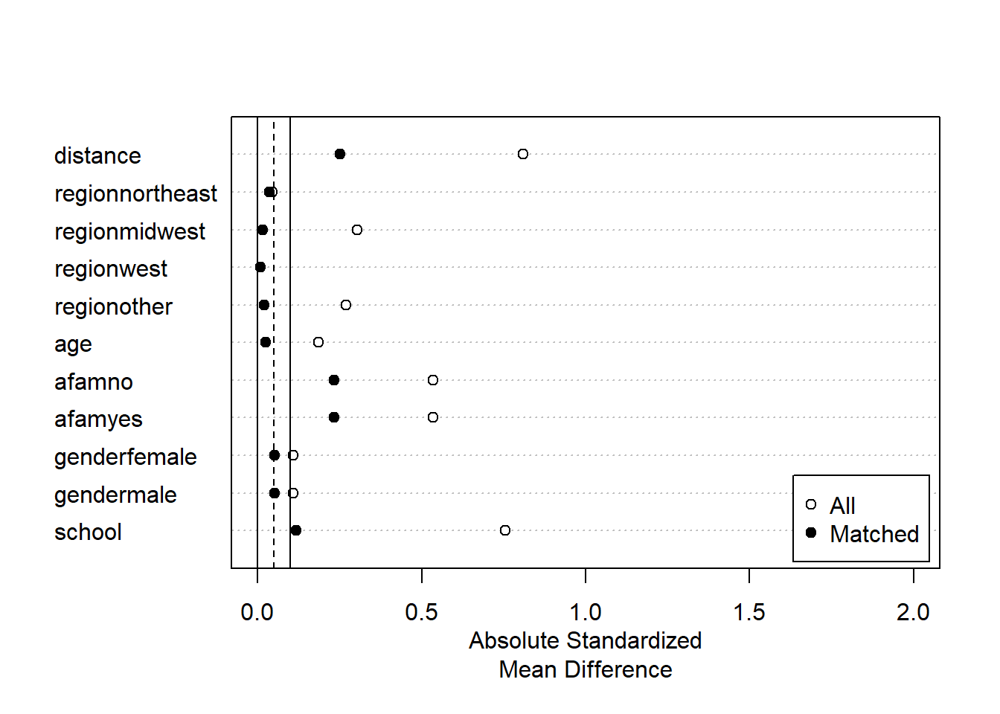

Chapter 6 部分線形モデルの推定
（条件付き）平均差の周辺化値の推定を目指します。
モデルに関心のあるパラメータを埋め込み、推定します。
\[E[Y|D=d,X=x]=\underbrace{\tau}_{Interest\ parameter}\times d+\underbrace{f(x)}_{Nuisance\ function}\]
- 点推定だけでなく、信頼区間も推定する。
6.1 データ
library(tidyverse)
data("NMES1988",
package = "AER")
raw <- na.omit(NMES1988)
raw <- mutate(raw,
no_insurance = if_else(insurance == "no",1, 0))
set.seed(123)6.2 線形モデルの推定
\(\tau(x)=\tau,f(x)=\beta_0+\beta_1x_1+...+\beta_Lx_L\)と特定化
サンプル内MSEを最大化するように推定
robust standard errorを計算するためにestimatrパッケージ(Blair et al. 2021)を利用
library(estimatr)- lm_robust関数で推定
lm_robust(visits ~ no_insurance + region + age + afam + gender + school,
data = raw)## Estimate Std. Error t value Pr(>|t|) CI Lower
## (Intercept) 4.54907549 1.20748732 3.7673898 0.0001671226 2.18179218
## no_insurance -0.89651959 0.24500870 -3.6591336 0.0002560368 -1.37686005
## regionnortheast 0.35604317 0.30412286 1.1707215 0.2417741833 -0.24019081
## regionmidwest -0.39742720 0.25426862 -1.5630210 0.1181196168 -0.89592176
## regionwest 0.54872702 0.30377478 1.8063614 0.0709302595 -0.04682454
## age 0.12381338 0.15107220 0.8195643 0.4125089371 -0.17236421
## afamyes -0.34591740 0.34411264 -1.0052447 0.3148343575 -1.02055148
## gendermale -0.63041288 0.20831504 -3.0262475 0.0024904316 -1.03881527
## school 0.07205651 0.02986636 2.4126310 0.0158785157 0.01350340
## CI Upper DF
## (Intercept) 6.9163588 4397
## no_insurance -0.4161791 4397
## regionnortheast 0.9522772 4397
## regionmidwest 0.1010674 4397
## regionwest 1.1442786 4397
## age 0.4199910 4397
## afamyes 0.3287167 4397
## gendermale -0.2220105 4397
## school 0.1306096 4397発展:推計結果表
tidy関数により推定結果data.frameに変化することで、kable関数(knitrパッケージ)による推計結果表の整形、geom_pointrange関数による可視化が可能
点推定値(estimate)、標準誤差(std.error)のみを残した推計結果表
library(knitr)
fit <-
lm_robust(visits ~ no_insurance + region + age + afam + gender + school,
data = raw)
fit <- tidy(fit)
fit <- select(fit, term, estimate, std.error)
kable(fit, digits = 2)| term | estimate | std.error |
|---|---|---|
| (Intercept) | 4.55 | 1.21 |
| no_insurance | -0.90 | 0.25 |
| regionnortheast | 0.36 | 0.30 |
| regionmidwest | -0.40 | 0.25 |
| regionwest | 0.55 | 0.30 |
| age | 0.12 | 0.15 |
| afamyes | -0.35 | 0.34 |
| gendermale | -0.63 | 0.21 |
| school | 0.07 | 0.03 |
fit <- filter(fit,
term == "no_insurance")
kable(fit, digits = 2)| term | estimate | std.error |
|---|---|---|
| no_insurance | -0.9 | 0.25 |
発展:Dot-and-Whisker plotによる可視化
- Dot-and-Whisker図により点推定量と信頼区間を可視化
fit <-
lm_robust(visits ~ no_insurance + region + age + afam + gender + school,
data = raw)
fit <- tidy(fit)
fit <- filter(fit,
term != "(Intercept)")
ggplot(fit, aes(y = term,
x = estimate,
xmin = conf.low,
xmax = conf.high)) +
geom_pointrange()
fit <- filter(fit,
term == "no_insurance")
ggplot(fit, aes(y = term,
x = estimate,
xmin = conf.low,
xmax = conf.high)) +
geom_pointrange() +
geom_vline(xintercept = 0)6.3 マッチング法による修正
library(MatchIt)6.3.1 Nearest neighbor matching
fit.m <- matchit(no_insurance ~ region + age + afam + gender + school,
data = raw,
method = "nearest")sum.m <- summary(fit.m)
plot(sum.m, xlim=c(0,2))
df <- match.data(fit.m)
lm_robust(visits ~ no_insurance + region + age + afam + gender + school,
df,
clusters = subclass,
weights = weights)## Estimate Std. Error t value Pr(>|t|) CI Lower
## (Intercept) 4.03758583 1.7329025 2.3299556 0.020224920 0.63251758
## no_insurance -0.86928716 0.2984279 -2.9128888 0.003662714 -1.45492188
## regionnortheast 0.66810128 0.4602372 1.4516455 0.147322247 -0.23646820
## regionmidwest -1.00195066 0.3675805 -2.7257991 0.006712388 -1.72470450
## regionwest 1.01297427 0.3883972 2.6080887 0.009408109 0.24967419
## age 0.25926478 0.2107944 1.2299413 0.219334238 -0.15495116
## afamyes -0.37043032 0.3439426 -1.0770121 0.281984225 -1.04614954
## gendermale -0.90678819 0.3021627 -3.0009931 0.002772533 -1.49989137
## school 0.01480405 0.0383591 0.3859332 0.699740085 -0.06059402
## CI Upper DF
## (Intercept) 7.44265409 476.8893
## no_insurance -0.28365244 975.1724
## regionnortheast 1.57267076 434.2548
## regionmidwest -0.27919682 378.8007
## regionwest 1.77627435 449.4157
## age 0.67348072 470.0911
## afamyes 0.30528890 509.8327
## gendermale -0.31368501 820.2442
## school 0.09020212 423.24696.3.2 Coarsened exact matching
fit.m <- matchit(no_insurance ~ region + age + afam + gender + school,
data = raw,
method = "cem",
k2k = TRUE)sum.m <- summary(fit.m)
plot(sum.m, xlim=c(0,2))df <- match.data(fit.m)
lm_robust(visits ~ no_insurance + region + age + afam + gender + school,
df,
clusters = subclass,
weights = weights)## Estimate Std. Error t value Pr(>|t|) CI Lower
## (Intercept) 3.561410841 2.47695497 1.43781816 0.1519930555 -1.32183233
## no_insurance -0.547745400 0.34477470 -1.58870531 0.1126392066 -1.22481957
## regionnortheast 0.175756782 0.57402808 0.30618151 0.7597632267 -0.95569711
## regionmidwest -1.501779273 0.39984093 -3.75594183 0.0002175475 -2.28948860
## regionwest 0.968830854 0.52763059 1.83619160 0.0678536818 -0.07177177
## age 0.336254020 0.30422545 1.10527907 0.2703522931 -0.26360780
## afamyes -0.717320069 0.52001127 -1.37943176 0.1700910410 -1.74594103
## gendermale -1.262136493 0.35940647 -3.51172444 0.0004878990 -1.96836727
## school 0.002509658 0.05155103 0.04868299 0.9612250738 -0.09920176
## CI Upper DF
## (Intercept) 8.4446540 207.3593
## no_insurance 0.1293288 616.9999
## regionnortheast 1.3072107 214.6445
## regionmidwest -0.7140699 236.2350
## regionwest 2.0094335 194.7769
## age 0.9361158 202.1698
## afamyes 0.3113009 132.1769
## gendermale -0.5559057 473.0157
## school 0.1042211 182.82996.4 部分推計モデルの推定
- 部分線形モデルをロビンソン変換(Robinson 1988)
\[Y_i-\underbrace{E[Y_i|X_i]}_{Nuisance\ term}=\tau\times [D_i-\underbrace{E[D_i|X_i]}_{Nuisance\ term}]+u_i\]
\(E[Y_i|X_i],E[D_i|X_i]\)を予測関数として推定し、予測誤差間を単回帰すればよい
実際には\(E[Y_i|X_i],E[D_i|X_i]\)は未知の関数なので何らかの方法で推定する必要がある。関数の推定なので予測の手法が適用できる。
6.4.0.1 Double selection: rlassoEffect (hdm)
2重選択法(Belloni, Chernozhukov, and Hansen 2014)を紹介
LASSOにより\(Y_i,D_i\)の両方あるいはどちらか一方を予測する上でrelevantな\(X^c\)を特定しコントロールする
- \(Y_i,D_i\)どちらの予測にもrelevantではない変数は除外する
hdmパッケージ(Spindler, Chernozhukov, and Hansen 2019)を利用
library(hdm)
Y <- raw$visits
D <- raw$no_insurance
X <- model.matrix(~ - 1+ region + age + afam + gender + school +
I(age^2) + I(school^2) +
region:age + region:afam + region:gender + region:school +
age:afam + age:gender + age:school +
afam:gender + afam:school +
gender:school,
raw)
fit <-
rlassoEffect(x = X,
y = Y,
d = D,
method = "double selection")- 推定結果
summary(fit)## [1] "Estimates and significance testing of the effect of target variables"
## Estimate. Std. Error t value Pr(>|t|)
## d1 -0.8642 0.2452 -3.524 0.000425 ***
## ---
## Signif. codes: 0 '***' 0.001 '**' 0.01 '*' 0.05 '.' 0.1 ' ' 1- 選択されたコントロール変数
fit$selection.index## regionnortheast regionmidwest
## FALSE TRUE
## regionwest regionother
## FALSE FALSE
## age afamyes
## FALSE FALSE
## gendermale school
## FALSE TRUE
## I(age^2) I(school^2)
## FALSE FALSE
## regionnortheast:age regionmidwest:age
## FALSE FALSE
## regionwest:age regionnortheast:afamyes
## FALSE FALSE
## regionmidwest:afamyes regionwest:afamyes
## FALSE FALSE
## regionnortheast:gendermale regionmidwest:gendermale
## FALSE FALSE
## regionwest:gendermale regionnortheast:school
## FALSE FALSE
## regionmidwest:school regionwest:school
## FALSE FALSE
## age:afamyes age:gendermale
## TRUE FALSE
## age:school afamyes:gendermale
## TRUE FALSE
## afamyes:school gendermale:school
## FALSE FALSE6.4.0.2 Double Machine Learning (DoubleML)
Double Machine Learning法(Chernozhukov et al. 2018)を紹介
なんらかの方法（例、OLS、ランダムフォレスト、LASSO）で\(E[Y|X],E[D|X]\)の予測関数\(f_Y(X),f_D(X)\)を推定し、予測誤差を単回帰
DoubleMLパッケージ(Bach et al. 2021)を利用
library(DoubleML)
library(mlr3)
library(mlr3learners)
library(data.table)
X <- model.matrix(~ - 1+ region + age + afam + gender + school,
raw)
learner <-
lrn("regr.ranger",
num.trees = 100) # Require bigger num.trees in practice
ml_g <- learner$clone()
ml_m <- learner$clone()
obj_dml_data <-
double_ml_data_from_matrix(X = X,
y = as.numeric(Y),
d = as.numeric(D))
dml_plr_obj <-
DoubleMLPLR$new(obj_dml_data,
ml_g,
ml_m,
dml_procedure="dml1",
n_rep = 3)
dml_plr_obj$fit()## INFO [19:43:33.076] [mlr3] Applying learner 'regr.ranger' on task 'nuis_g' (iter 3/5)
## INFO [19:43:33.406] [mlr3] Applying learner 'regr.ranger' on task 'nuis_g' (iter 1/5)
## INFO [19:43:33.660] [mlr3] Applying learner 'regr.ranger' on task 'nuis_g' (iter 4/5)
## INFO [19:43:33.889] [mlr3] Applying learner 'regr.ranger' on task 'nuis_g' (iter 5/5)
## INFO [19:43:34.037] [mlr3] Applying learner 'regr.ranger' on task 'nuis_g' (iter 2/5)
## INFO [19:43:34.715] [mlr3] Applying learner 'regr.ranger' on task 'nuis_m' (iter 1/5)
## INFO [19:43:34.858] [mlr3] Applying learner 'regr.ranger' on task 'nuis_m' (iter 3/5)
## INFO [19:43:35.094] [mlr3] Applying learner 'regr.ranger' on task 'nuis_m' (iter 4/5)
## INFO [19:43:35.259] [mlr3] Applying learner 'regr.ranger' on task 'nuis_m' (iter 5/5)
## INFO [19:43:35.408] [mlr3] Applying learner 'regr.ranger' on task 'nuis_m' (iter 2/5)
## INFO [19:43:35.662] [mlr3] Applying learner 'regr.ranger' on task 'nuis_g' (iter 3/5)
## INFO [19:43:35.816] [mlr3] Applying learner 'regr.ranger' on task 'nuis_g' (iter 5/5)
## INFO [19:43:36.042] [mlr3] Applying learner 'regr.ranger' on task 'nuis_g' (iter 1/5)
## INFO [19:43:36.214] [mlr3] Applying learner 'regr.ranger' on task 'nuis_g' (iter 2/5)
## INFO [19:43:36.427] [mlr3] Applying learner 'regr.ranger' on task 'nuis_g' (iter 4/5)
## INFO [19:43:36.754] [mlr3] Applying learner 'regr.ranger' on task 'nuis_m' (iter 4/5)
## INFO [19:43:36.952] [mlr3] Applying learner 'regr.ranger' on task 'nuis_m' (iter 1/5)
## INFO [19:43:37.103] [mlr3] Applying learner 'regr.ranger' on task 'nuis_m' (iter 5/5)
## INFO [19:43:37.300] [mlr3] Applying learner 'regr.ranger' on task 'nuis_m' (iter 3/5)
## INFO [19:43:37.444] [mlr3] Applying learner 'regr.ranger' on task 'nuis_m' (iter 2/5)
## INFO [19:43:37.693] [mlr3] Applying learner 'regr.ranger' on task 'nuis_g' (iter 1/5)
## INFO [19:43:37.875] [mlr3] Applying learner 'regr.ranger' on task 'nuis_g' (iter 3/5)
## INFO [19:43:38.022] [mlr3] Applying learner 'regr.ranger' on task 'nuis_g' (iter 5/5)
## INFO [19:43:38.173] [mlr3] Applying learner 'regr.ranger' on task 'nuis_g' (iter 2/5)
## INFO [19:43:38.362] [mlr3] Applying learner 'regr.ranger' on task 'nuis_g' (iter 4/5)
## INFO [19:43:38.665] [mlr3] Applying learner 'regr.ranger' on task 'nuis_m' (iter 3/5)
## INFO [19:43:38.832] [mlr3] Applying learner 'regr.ranger' on task 'nuis_m' (iter 1/5)
## INFO [19:43:38.994] [mlr3] Applying learner 'regr.ranger' on task 'nuis_m' (iter 2/5)
## INFO [19:43:39.169] [mlr3] Applying learner 'regr.ranger' on task 'nuis_m' (iter 4/5)
## INFO [19:43:39.313] [mlr3] Applying learner 'regr.ranger' on task 'nuis_m' (iter 5/5)print(dml_plr_obj)## ================= DoubleMLPLR Object ==================
##
##
## ------------------ Data summary ------------------
## Outcome variable: y
## Treatment variable(s): d
## Covariates: X1, X2, X3, X4, X5, X6, X7, X8
## Instrument(s):
## No. Observations: 4406
##
## ------------------ Score & algorithm ------------------
## Score function: partialling out
## DML algorithm: dml1
##
## ------------------ Machine learner ------------------
## ml_g: regr.ranger
## ml_m: regr.ranger
##
## ------------------ Resampling ------------------
## No. folds: 5
## No. repeated sample splits: 3
## Apply cross-fitting: TRUE
##
## ------------------ Fit summary ------------------
## [1] "Estimates and significance testing of the effect of target variables"
## Estimate. Std. Error t value Pr(>|t|)
## d -1.0325 0.2446 -4.222 2.43e-05 ***
## ---
## Signif. codes: 0 '***' 0.001 '**' 0.01 '*' 0.05 '.' 0.1 ' ' 1